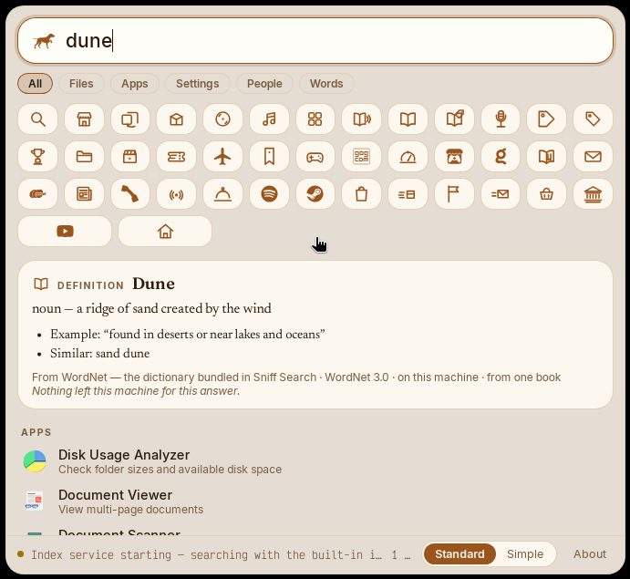
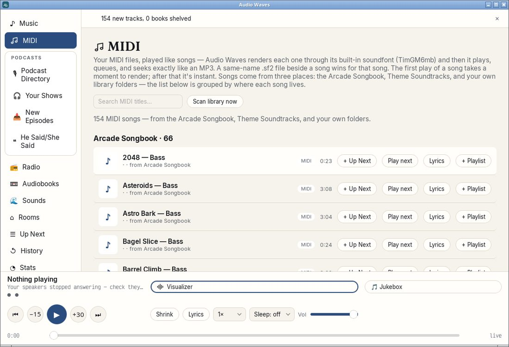
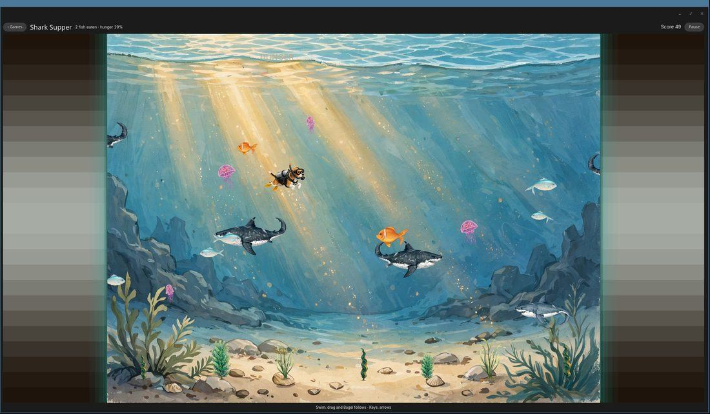
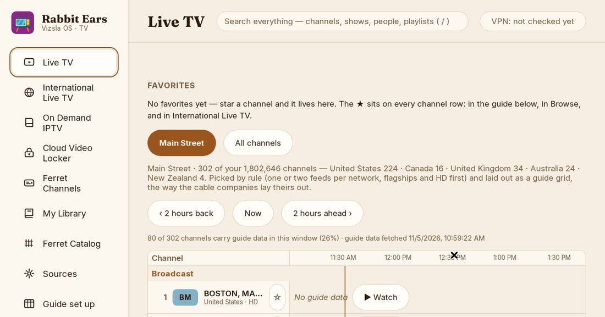
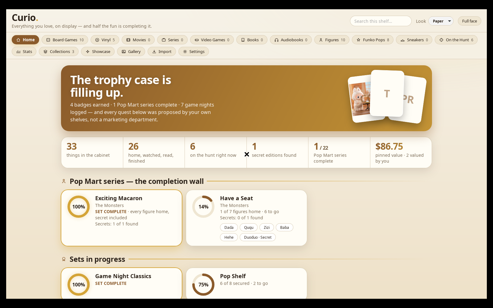
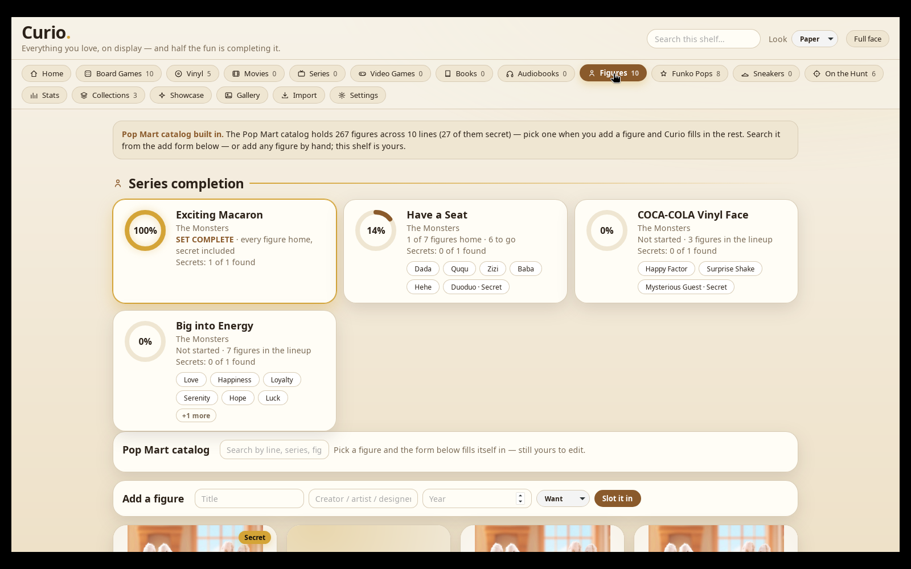
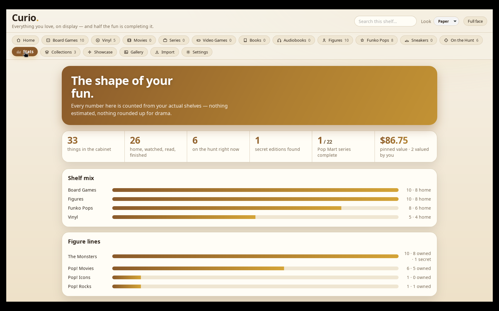
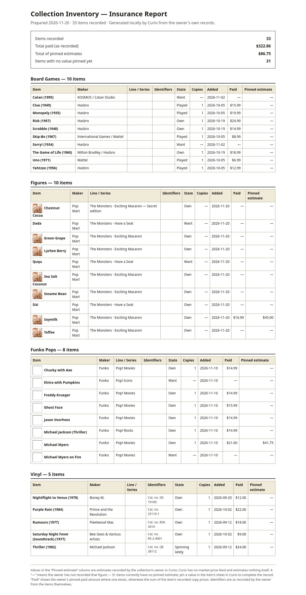
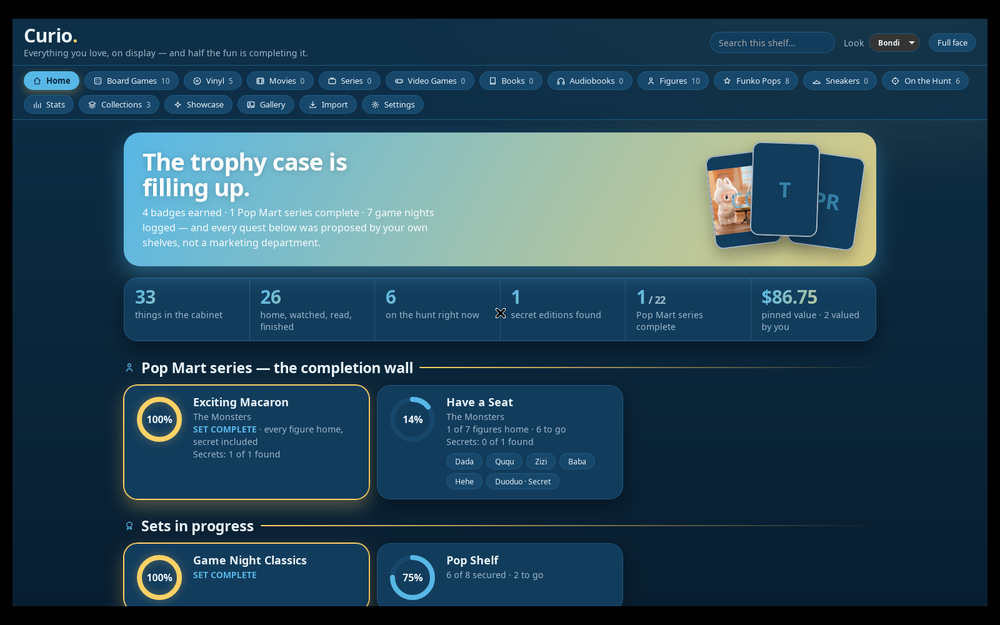

What’s new
What’s new
New in November 2026 — shipped, in the house, and in daily use. Vizsla itself is still not released; this is the work arriving, piece by piece.
Rabbit Ears
Television, caught up
Rabbit Ears learned the streaming tricks without the streaming manners: Continue Watching, skip the intro and the credits, catch-up, recording, and profiles with PINs — twenty-one improvements in one November run, on your own channels.
Elefunk
A real phone line, in the house
Elefunk answers the phone now: caller ID that looks a number up and names its sources, voicemail transcribed and tidied with the recording kept as the record, and texts that land in about a minute. The same Elefunk rides on the phone, too — see Phone & texting.
Typehound
New: Typehound
Type ;addr and the whole address lands. Typehound is the
family’s text expander — your snippets, in almost every app,
from one library you keep.
Secrets
Passkeys moved in
Secrets keeps passkeys now — signed, and seated on every machine — and its quiet service keeps the vault on duty even when the app itself is closed.
Sniff Search
It forgives typos now
Type “pohtos” and Sniff finds your photos — and shows its guess out loud, with one tap to search exactly what you typed. No silent corrections, no dead ends.
AudioWaves
A new face for the music
AudioWaves wears its Living Cover properly now — the settings behind one door, a real full-screen, and faces fitted for the phone and the TV. The family’s MIDI soundtracks sit on the shelf, too, playable like any record in the house.
Vizsla Arcade
The shelf keeps growing
Forty-seven games now, and November was a stampede: Run 21, Clockwork Solitaire, Tri Castles, the Final Table dice and blackjack tables, Letter Twist, Little Shop of Treasures, Close the Clock and Bottle Top Drop all joined the shelf. Every older game was audited end to end, too — graphics, gameplay, and a full three-minute song apiece. Arcade 0.11.73 is the current build, seated byte-identical on Tina and the G9. More of the Arcade →
Curio
The collection desk got pretty — and learned Pop Mart by heart
Curio arrived this November (0.1.1) and grew up in the same month. Version 0.2.0 is a new face on the family’s collection desk — rebuilt cover-forward, in Paper and Bondi — with a Pop Mart catalog built in: 267 figures across 10 lines, 27 of them secret. Adding a figure starts with a search — by line, series, name, or the barcode on the box — and Curio fills in the rest. Series completion leads the shelves now: a ring for every set, the secret counted, and the missing names one tap from the catalog. There is a Gallery for showing the collection off, and a one-click insurance report that itemizes every piece — what you paid, what you pinned, and an honest count of what has no value pinned yet. Seated on every machine in the house. See it up close →
Fable Files · Elefunk Pocket
Fixed, not just added
November wasn’t only new paint. Fable Files 0.1.43 learned to survive a damaged catalog: the hurt index is set aside whole, the app opens clean, and a plain-words note says what happened — shipped to every machine in the house on November 21. And Elefunk Pocket’s call log grew its missing verbs in 0.7.14: Delete and Archive for every call, missed ones included, each with an Undo — swipe right to archive, left to delete — proven on the test bench.
A sneak peek
Cool features are better shown than described — so here are four of the house’s apps as they actually look this November. No mockups anywhere on this site: these are real captures of the real software.




Up close
Two of November’s fix stories as they actually look — the same no-mockups rule as everything above.


Curio, up close
The collection desk after its November redesign — real captures of the seated 0.2.0 build, taken the day it published, showing the redesign crew’s sample shelves. One surface is missing from the pictures: the Gallery. The sample shelves it would show off are still short on artwork, so the wall gets its photograph in a later update, when the shelves do it justice.




